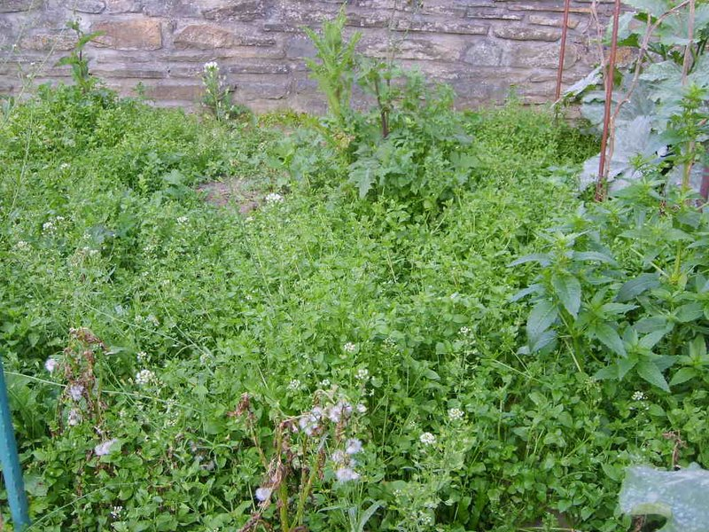

Effet sonore de la page :

Plante tapissante en grosse touffes, à tiges couchées de 10 à 30 cm, alternant d'un noeud à l'autre, et munies d'une ligne de longs poils.
Feuilles ovales, les inférieures pétiolées.
Petites fleurs aux pétales profondément bilobés, plus courts que sépales.
Les graines sont recherchées par les oiseaux.
Retour à la liste des plantes sauvages
Retour au sommaire Passion d'oiseaux